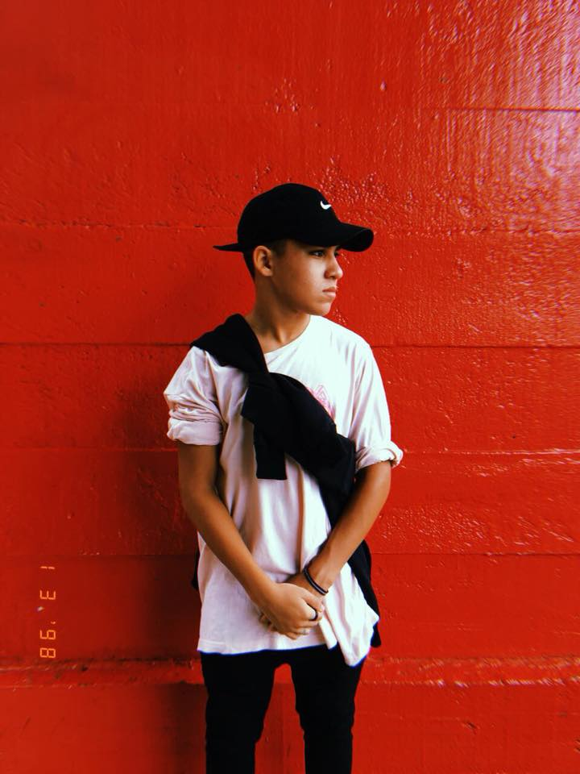

Lucas Rodrigues Yamashita Gonçalves

Portifólio sobre a vida de Lucas Gonçalves
- Nasceu no dia 31/03/2003
- Estuou no Colégio Inovação, Dourado e Silva prado
- Amante da matematica e jogador de truco
- Solteiro
- Curte astronomia, e também a área militar
- Nas horas livres joga Fortnite e CS GO
- Sobre músicas, escuta rock, lofi, indie e trap
- Cursa desenvolvimento de sistemas no Senai
- Seu hobbie é ver séries, sair com os amigos e curtir
- Anda de skate desde os 12 anos
- Fez um curso de programação em blocos na 'estaçao hack'